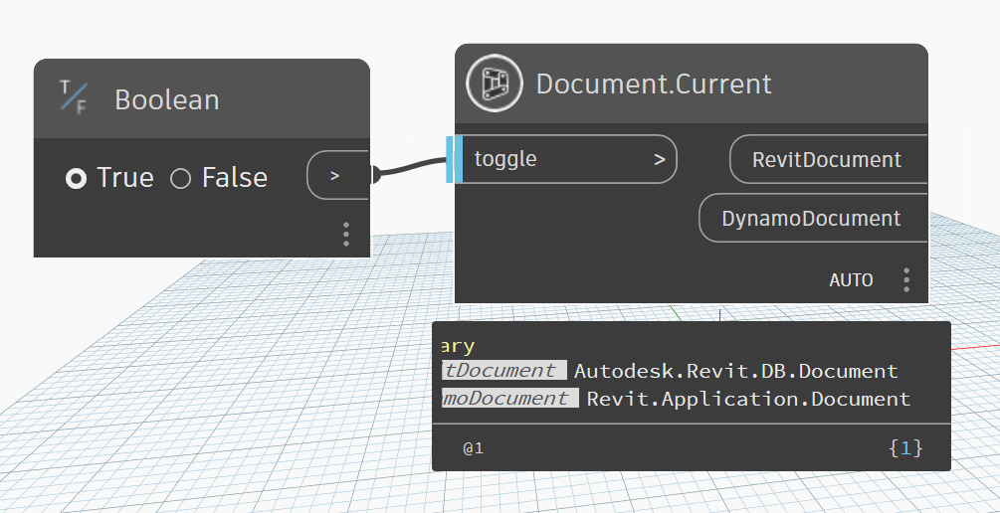

Class Document
- Namespace
- OpenMEPRevit.Document
- Assembly
- OpenMEPRevit.dll
An object that represents an open Autodesk Revit project.
public class Document- Inheritance
-
Document
- Inherited Members
Remarks
The Document object represents an Autodesk Revit project. Revit can have multiple projects open and multiple views to those projects. The active or top most view will be the active project and hence the active document which is available from the Application object.
Methods
Application(Document)
Get Application From Revit Document
public static Application Application(Document revitDocument)Parameters
revitDocumentDocumentAutodesk.Revit.DB.Document
Returns
- Application
Autodesk.Revit.ApplicationServices.Application
Current(bool)
Get Document Current
[MultiReturn(new string[] { "RevitDocument", "DynamoDocument" })]
public static Dictionary<string, object?> Current(bool toggle = true)Parameters
togglebooltoggle true to get current document
Returns
- Dictionary<string, object>
Document of Revit Project
Examples

DisplayUnitSystem(Document)
Provides access to display unit type with in the document.
public static string DisplayUnitSystem(Document revitDocument)Parameters
revitDocumentDocumentAutodesk.Revit.DB.Document
Returns
- string
Return the display unit type, metric or imperial.
GetCloudFolderId(Document, bool)
Gets ForgeDM folder id where the model locates.
public static string GetCloudFolderId(Document revitDocument, bool forceRefresh = false)Parameters
revitDocumentDocumentAutodesk.Revit.DB.Document
forceRefreshboolCached value will be refreshed by sending a service call when forceRefresh is true.
Returns
Remarks
It is empty for non-cloud model; It is cached in Revit model opened session after getting it if forceRefresh is false; ForgeDM folder id can be changed during Revit model opened session, set forceRefresh as 'true' to get new value.
Exceptions
- RevitServerUnauthorizedException
Thrown when cannot get data from ForgeDM for Revit cloud model.
GetCloudModelPath(Document)
Gets the cloud model path of the cloud model.
[MultiReturn(new string[] { "CentralServerPath", "CloudPath", "Region", "ServerPath", "ModelGUID", "ProjectGUID" })]
public static Dictionary<string, object> GetCloudModelPath(Document revitDocument)Parameters
revitDocumentDocument
Returns
- Dictionary<string, object>
The cloud model path
Exceptions
- InvalidOperationException
This Document is a not cloud model, cannot execute this operation.
GetCloudModelUrn(Document)
A ForgeDM Urn identifying the model.
public static string GetCloudModelUrn(Document revitDocument)Parameters
revitDocumentDocumentAutodesk.Revit.DB.Document
Returns
Remarks
It is empty for non-cloud model; It is cached in Revit model opened session after getting it;
Exceptions
- RevitServerUnauthorizedException
Thrown when cannot get data from ForgeDM.
GetHubId(Document)
Gets ForgeDM hub id where the model locates. It is cached in session.
public static string GetHubId(Document revitDocument)Parameters
revitDocumentDocumentAutodesk.Revit.DB.Document
Returns
- string
Id hub locates the model
Remarks
It is empty for non-cloud model; It is cached in Revit model opened session after getting it;
Exceptions
- RevitServerUnauthorizedException
Thrown when cannot get data from ForgeDM for Revit cloud model.
GetProjectId(Document)
Gets ForgeDM project id where the model locates.
public static string GetProjectId(Document revitDocument)Parameters
revitDocumentDocumentAutodesk.Revit.DB.Document
Returns
- string
id of project locates the project
Remarks
It is empty for non-cloud model; It is cached in Revit model opened session after getting it;
Exceptions
- RevitServerUnauthorizedException
Thrown when cannot get data from ForgeDM for Revit cloud model.
IsDetached(Document)
Identifies if a work-shared document is detached. Also, see Autodesk.Revit.DB.Document.IsWorkshared
[NodeCategory("Query")]
public static bool IsDetached(Document revitDocument)Parameters
revitDocumentDocument
Returns
- bool
true if work-shared document is detached
Remarks
Note that Autodesk.Revit.DB.Document.Title and Autodesk.Revit.DB.Document.PathName will be empty strings if a document is detached.
IsFamilyDocument(Document)
Identifies if the current document is a family document.
[NodeCategory("Query")]
public static bool IsFamilyDocument(Document revitDocument)Parameters
revitDocumentDocumentAutodesk.Revit.DB.Document
Returns
- bool
true if document is family document
IsLinked(Document)
Identifies if a document is a linked RVT
[NodeCategory("Query")]
public static bool IsLinked(Document revitDocument)Parameters
revitDocumentDocumentAutodesk.Revit.DB.Document
Returns
- bool
true if document is linked RVT
Title(Document)
Get Document Title
public static string Title(Document revitDocument)Parameters
revitDocumentDocumentAutodesk.Revit.DB.Document
Returns
- string
Title of Document
ToDynamoDocument(Document?)
Convert Revit Document to Dynamo Document
public static Document? ToDynamoDocument(Document? revitDocument)Parameters
revitDocumentDocumentAutodesk.Revit.DB.Document
Returns
- Document
Revit.Application.Document
ToRevitDocument(Document?)
Convert Dynamo Document to Revit Document
public static Document? ToRevitDocument(Document? dynamoDocument)Parameters
dynamoDocumentDocumentRevit.Application.Document
Returns
- Document
Autodesk.Revit.DB.Document